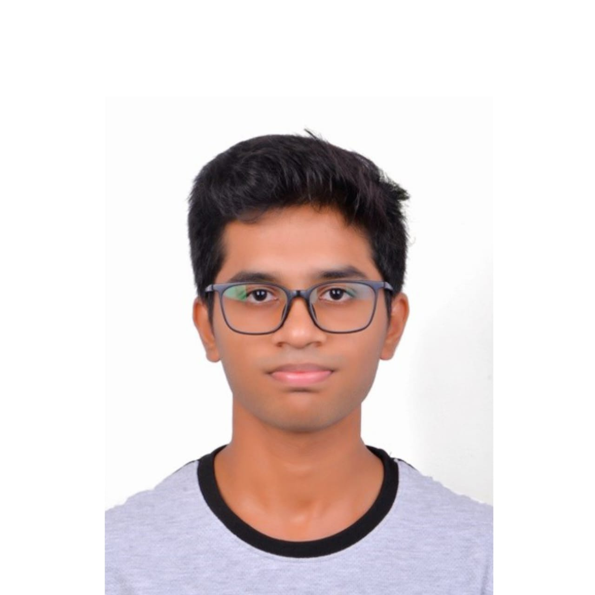

Gourav Sherikar
Team lead. Designed the project pipeline and architecture and developed the website. Interested in computer systems, backend development, and optimising or advancing ML algorithms.
The people behind Beyond the Basket.
Team lead. Designed the project pipeline and architecture and developed the website. Interested in computer systems, backend development, and optimising or advancing ML algorithms.

Contributed to data preprocessing, exploratory data analysis, and project report preparation. Interested in mathematics, finance, and analytical problem-solving.

Worked on plotting graphs and coordinating with team members. Interested in computer systems and backend development.